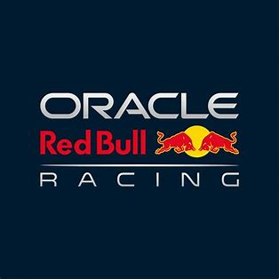
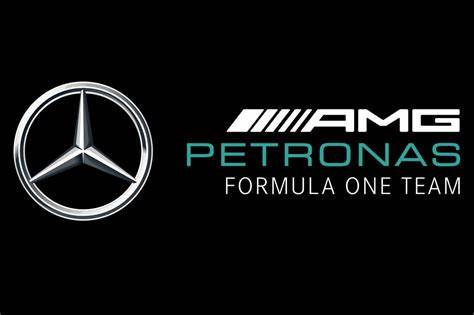
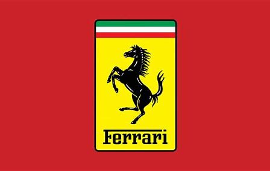
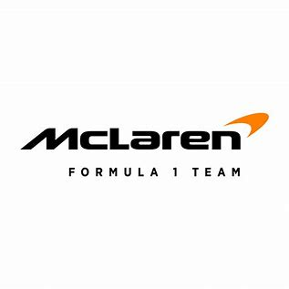
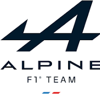

| Red Bull Racing |
| Drivers: |
Max Verstappen, Sergio Perez |
| Achievements: |
Max Verstappen 4th World Title, Red Bull 1st in Constructors |
|  |
| Mercedes |
| Drivers: |
Lewis Hamilton, George Russell |
| Achievements: |
2nd in Constructors, Hamilton podium finishes |
|  |
| Ferrari |
| Drivers: |
Charles Leclerc, Carlos Sainz |
| Achievements: |
3rd in Constructors, Leclerc wins in Monaco |
|  |
| McLaren |
| Drivers: |
Lando Norris, Oscar Piastri |
| Achievements: |
4th in Constructors, Norris multiple podiums |
|  |
| Aston Martin |
| Drivers: |
Fernando Alonso, Lance Stroll |
| Achievements: |
5th in Constructors, Alonso's consistent points finishes |
|  |
| Alpine |
| Drivers: |
Esteban Ocon, Pierre Gasly |
| Achievements: |
6th in Constructors, Ocon's strong performances |
|  |
| AlphaTauri |
| Drivers: |
Yuki Tsunoda, Nyck de Vries |
| Achievements: |
7th in Constructors, Tsunoda's impressive qualifying |
| |